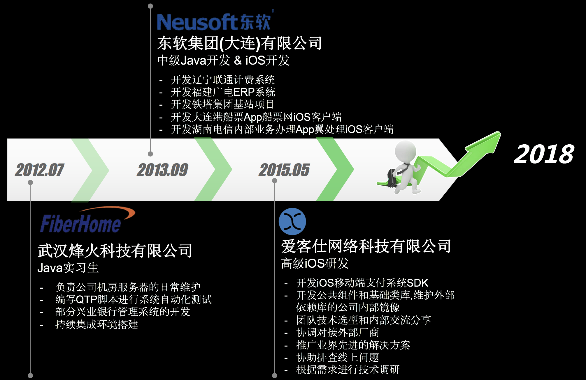

个人简历
2018-05-10
基础信息
- 樊华 / 男 / 1990.01.02
- 学历: 2009.09 - 2013.06 武汉理工大学(计算机科学与技术)
- 手机: 15258897103
- Email: 136652711@qq.com
- 工作经验: 5年
- Github: https://github.com/FinderTiwk
- StackOverflow: https://stackoverflow.com/users/6940382
工作经历

项目经验
一. 爱客仕掌柜HD & 爱客仕掌柜 (App Store上架)
项目职位: 主要开发人员
项目职责:
- 工程管理:
- 证书描述文件管理和各种工程环境配置
- 工程构架设计
- 完成数据埋点
- 完成 TestFlight 流程和 App Store 应用上架
- 启动页的全设备适配
- 模块拆解和任务分配
- 使用 Hudson 和配合一起插件完成持续集成
- 登录模块:
- 使用 Storyboard 完成多设备适配
- 自定义安全验证 SliderBar 配合接口完成防机器人
- 权限设置子模块的开发,和对外开发权限读取接口
- 实现类似QQ的联系人上面的标签选项卡控件 FTSegmentedView,已开源
- 自定义小票模块:
- 使用第三方库 Mustache,ReactiveCocoa 配合 HTML 和 CSS 完成多种自定义小票样式的统一和修改后的实时渲染
- 使用配置数据源的方式完成不同类型的表格展示和事件处理
- 实现自定义滑杆 FTScaleSliderView 控件控制字体大小设置,已开源
二. 爱客仕收银台(企业分发和App Store上架)
项目职位: 核心开发人员
项目职责:
- 核心业务和基础类库的开发
- 开发聚合支付(包括微信,支付宝,银联/中行/盛付通刷卡闪付,现金等支付方式)SDK,并完成集成
- 基础类库的开发(包括公共方法,数据加密,长连接心跳等公共组件)
- 实体卡(M1卡)的调研和底层SDK模块开发
- 工程管理:
- 证书描述文件管理和各种工程环境配置
- 协助运维完成企业分发
- AppStore 应用上架
- 持续集成
- 接入 JSPatch 实现热修复,接入 Fabric/Bugly 完成线上崩溃监测
- 提供技术解决方案和对外协调对接
- 内部 Ccocoapod 私有库的更新和维护
- 解决一些硬件外设驱动库不支持模拟器编译,影响开发效率的问题
- 使用 Realm 替换 SQLite,解决 SQLite 数据库版本迁移复杂的问题
- 提供Realm的级联删除方案 RealmCaseCadeDelete,已开源
- 提供网络请求被网络运营商劫持的解决方案,使用阿里云 HttpDNS 方案,并且服务端改用Https
- 使用 UniTest + OCMock 完成部分单元测试
- 为了方便开发人员分析查看崩溃日志,制作了一个 解析崩溃日志的 Mac 应用,已开源
- 与银联,百富对接 POS 机刷卡业务
- 协助排查线上异常问题,单独制作一款内部使用的异常数据查询修复应用
三. 其它
- 参加了 2016年1月10日中国首届 Swift 开发者大会
- 参加了 2016年4月23号由 Tink 社区组织的 SwiftConChina2016 交流分享大会
- 给 JSPatch 提出过合理的功能性建议,作者在后面的版本加新增了这部分功能.
- 使用阿里云的 HttpDNS SDK 时帮助他们发现了一个版本的 Bug 以及部分 Warning 的修复
- 为著名第三方库 CocoaAsyncSocket 提交过 Pull Request,并被 Merge
- 参加环信线上编程大赛并获得优秀开源项目奖
- 为了科学上网速度更快,自己开发了一个 KCPTun 的Mac客户端工具
个人技能
- 熟练掌握 Objective-C, 熟悉 C/C++, 具有良好的编程风格和习惯, 较强的分析和解决问题能力
- 熟悉 iOS 框架以及各种特性,深刻理解常用设计模式 ,掌握数据结构并能实际应用
- 熟悉公司/个人App的 App Store 上架流程和企业App的分发流程,熟悉 TestFlight 的测试流程
- 熟练掌握 Storyboard 的使用技巧
- 熟练使用 CocoaPods 管理第三方库和私有库的搭建以及为自己的项目添加 CocoaPods 支持
- 熟练使用 Git/SVN 等版本管理工具,经常活跃在 Github
- 熟练使用 ReactiveCocoa,理解 FRP 编程思想
- 了解会使用 Swift , Node js, HTML, CSS, JavaScript
- 熟悉各种常用第三方库的使用
- 熟练 Debug 调试方法和工具的使用
- 能够阅读理解英文技术文档